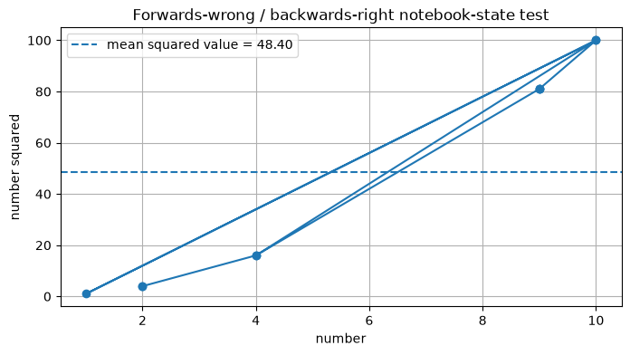
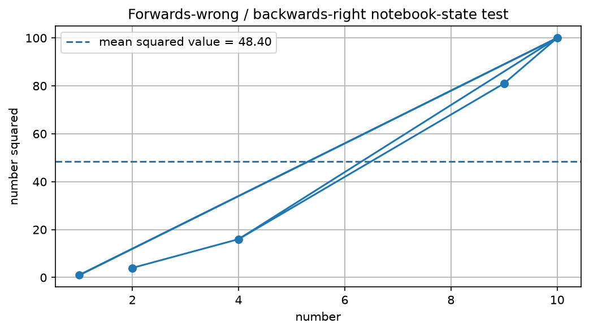

**Multimodal Jupy Logger HTML Timeline** This log file: D:\David\my_repos_dwb\multimodal-jupy-logger\jupy_log\timelines\timeline.html Timestamp: 1782766002605_2026-06-29T164642605-0400 Machine, user, etc.: BLACK-MACHINE bball@BLACK-MACHINE --- --- ---
1782759815228_2026-06-29T150335228-0400 — text — text/markdown
<details> <summary>Click the arrow to reveal logged Markdown text</summary> This content was logged as `text/markdown`. The regression question is whether exported timelines preserve this as renderable Markdown/HTML or incorrectly turn it into escaped or fenced source text. </details> <!-- ## 9. Code cell 08 — log the original Markdown regression case --> <!-- If I had left the python comment without the HTML comment, --> <!-- + it would have rendered as an `h2`. But you might only see --> <!-- + this in the dpypd.print_file version. --> <br/>HTML comments above.<br/>Hopefully you can see the utility of jupy_log as a note-taking device.
1782759848405_2026-06-29T150408405-0400 — html — text/html
This content was logged as text/html. It should be inserted
as HTML in the generated HTML timeline.
1782760095550_2026-06-29T150815550-0400 — text — text/x-python
message = "This stdout should be displayed and logged." print(message) ## 11. Code cell 14 — basic `%%jupy_capture` smoke test
1782760095856_2026-06-29T150815856-0400 — text — text/plain
This stdout should be displayed and logged.
1782760174892_2026-06-29T150934892-0400 — text — text/x-python
tee_message = "The %%jupy_tee alias executed this cell." print(tee_message) tee_message.upper() ## 12. Code cell 18 — basic `%%jupy_tee` alias test
1782760174910_2026-06-29T150934910-0400 — text — text/plain
The %%jupy_tee alias executed this cell.
1782760174921_2026-06-29T150934921-0400 — text — text/plain
'THE %%JUPY_TEE ALIAS EXECUTED THIS CELL.'
1782760280557_2026-06-29T151120557-0400 — text — text/x-python
state_names = [
"numbers",
"squared_numbers",
"avg_value",
"fig",
"ax",
"plot_path",
]
removed_names = []
for state_name in state_names:
if state_name in globals():
globals().pop(state_name)
removed_names.append(state_name)
##endof: if state_name in globals()
##endof: for state_name in state_names
print("Removed prior state:", removed_names)
print("A and B should now fail on their first executions.")
## 14. Code cell 23 — reset hidden kernel state
1782760280576_2026-06-29T151120576-0400 — text — text/plain
Removed prior state: [] A and B should now fail on their first executions.
1782760399754_2026-06-29T151319754-0400 — text — text/x-python
##done before# import matplotlib.plotly as plt
## P.S. Cell A does not import matplotlib here, because Cell C
##+ will do it before we come back for the successful run of
##+ already did. Same for numpy.
##+ This is intentional notebook-state dependence for the A/B/C test.
avg_value = squared_numbers.mean()
fig, ax = plt.subplots(figsize=(8, 4))
ax.plot(
numbers,
squared_numbers,
marker="o",
)
ax.axhline(
avg_value,
linestyle="--",
label=f"mean squared value = {avg_value:.2f}",
)
ax.set_title(
"Forwards-wrong / backwards-right notebook-state test"
)
ax.set_xlabel("number")
ax.set_ylabel("number squared")
ax.grid(True)
ax.legend()
plot_path = (
repo_root
/ "jupy_log"
/ "staging"
/ "abc_backwards_right.png"
)
plt.savefig(plot_path, dpi=150, bbox_inches="tight")
print("saved explicit plot file:", plot_path)
print("explicit plot exists:", plot_path.exists())
plt.show()
## 15. Code cell 27 — A, 1st execution: expected failure
#
## and
#
## 20. Code cell (still) 27 — A, 2nd execution: expected success and plot capture
## call it Code Cell 27|43
1782760400224_2026-06-29T151320224-0400 — text — text/plain
Traceback (most recent call last):
File "D:\David\my_repos_dwb\multimodal-jupy-logger\.venv_mmjl_test\Lib\site-packages\IPython\core\interactiveshell.py", line 3748, in run_code
exec(code_obj, self.user_global_ns, self.user_ns)
~~~~^^^^^^^^^^^^^^^^^^^^^^^^^^^^^^^^^^^^^^^^^^^^^
File "C:\Users\bball\AppData\Local\Temp\ipykernel_13164\2702192110.py", line 7, in <module>
avg_value = squared_numbers.mean()
^^^^^^^^^^^^^^^
NameError: name 'squared_numbers' is not defined
1782760985810_2026-06-29T152305810-0400 — text — text/x-python
squared_numbers = numbers ** 2
print("squared_numbers:", squared_numbers)
## 16. Code cell 32 — B, first execution: expected failure
#
## and
#
## 18. Code cell (still) 32 — B, second execution: expected success
## call it Code cell 32|40
1782760985837_2026-06-29T152305837-0400 — text — text/plain
Traceback (most recent call last):
File "D:\David\my_repos_dwb\multimodal-jupy-logger\.venv_mmjl_test\Lib\site-packages\IPython\core\interactiveshell.py", line 3748, in run_code
exec(code_obj, self.user_global_ns, self.user_ns)
~~~~^^^^^^^^^^^^^^^^^^^^^^^^^^^^^^^^^^^^^^^^^^^^^
File "C:\Users\bball\AppData\Local\Temp\ipykernel_13164\2522802886.py", line 1, in <module>
squared_numbers = numbers ** 2
^^^^^^^
NameError: name 'numbers' is not defined. Did you forget to import 'numbers'?
1782761483982_2026-06-29T153123982-0400 — text — text/x-python
import numpy as np
import matplotlib.pyplot as plt
## Older global-random-state style, like MLU
# numbers = np.random.randint(1, 11, size=10)
rng = np.random.default_rng()
numbers = rng.integers(1, 11, size=10)
print("numbers:", numbers)
## 17. Code cell 36 — C: expected success
1782761484600_2026-06-29T153124600-0400 — text — text/plain
numbers: [ 2 2 4 10 1 10 9 9 9 4]
1782761684196_2026-06-29T153444196-0400 — text — text/x-python
squared_numbers = numbers ** 2
print("squared_numbers:", squared_numbers)
## 16. Code cell 32 — B, first execution: expected failure
#
## and
#
## 18. Code cell (still) 32 — B, second execution: expected success
## call it Code cell 32|40
1782761684212_2026-06-29T153444212-0400 — text — text/plain
squared_numbers: [ 4 4 16 100 1 100 81 81 81 16]
1782762473892_2026-06-29T154753892-0400 — text — text/x-python
##done before# import matplotlib.plotly as plt
## P.S. Cell A does not import matplotlib here, because Cell C
##+ will do it before we come back for the successful run of
##+ already did. Same for numpy.
##+ This is intentional notebook-state dependence for the A/B/C test.
avg_value = squared_numbers.mean()
fig, ax = plt.subplots(figsize=(8, 4))
ax.plot(
numbers,
squared_numbers,
marker="o",
)
ax.axhline(
avg_value,
linestyle="--",
label=f"mean squared value = {avg_value:.2f}",
)
ax.set_title(
"Forwards-wrong / backwards-right notebook-state test"
)
ax.set_xlabel("number")
ax.set_ylabel("number squared")
ax.grid(True)
ax.legend()
plot_path = (
repo_root
/ "jupy_log"
/ "staging"
/ "abc_backwards_right.png"
)
plt.savefig(plot_path, dpi=150, bbox_inches="tight")
print("saved explicit plot file:", plot_path)
print("explicit plot exists:", plot_path.exists())
plt.show()
## 15. Code cell 27 — A, 1st execution: expected failure
#
## and
#
## 20. Code cell (still) 27 — A, 2nd execution: expected success and plot capture
## call it Code Cell 27|44
1782762474682_2026-06-29T154754682-0400 — text — text/plain
saved explicit plot file: D:\David\my_repos_dwb\multimodal-jupy-logger\jupy_log\staging\abc_backwards_right.png explicit plot exists: True
1782762474692_2026-06-29T154754692-0400 — text — text/plain
<Figure size 800x400 with 1 Axes>
1782762474700_2026-06-29T154754700-0400 — image — image/png

1782764942837_2026-06-29T162902837-0400 — image — image/png
